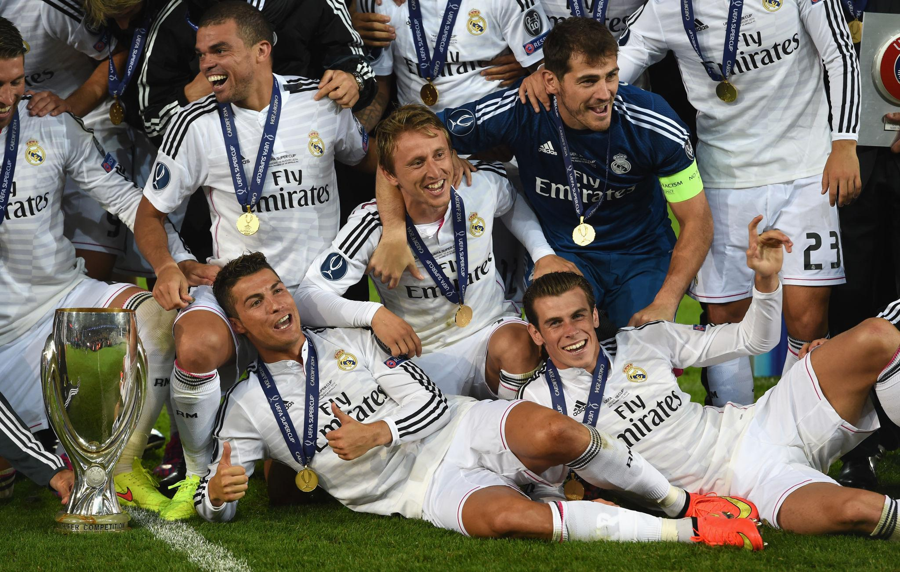
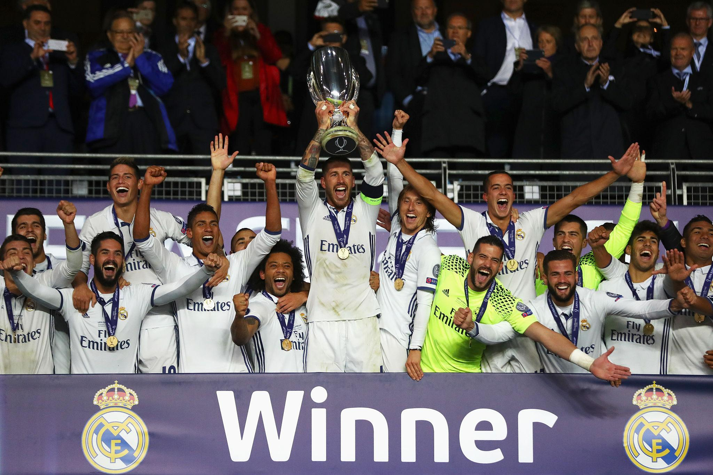
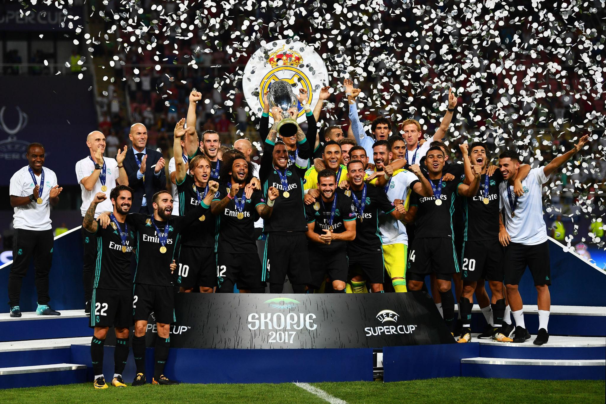
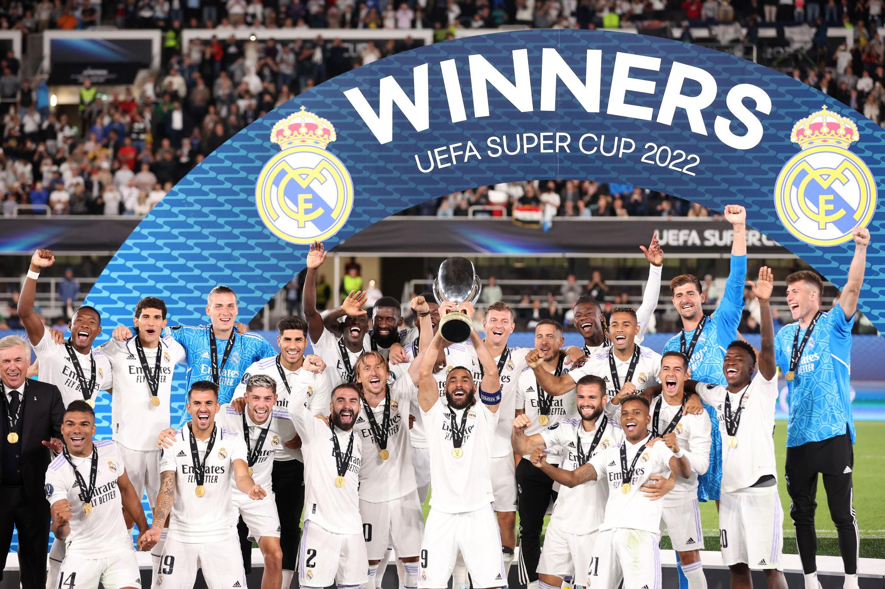
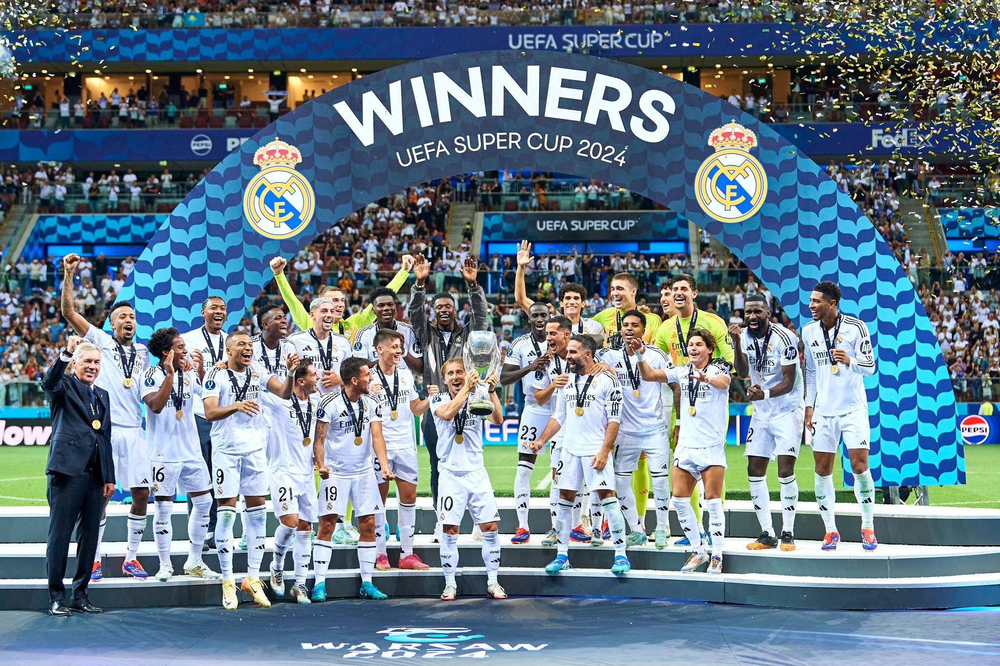

The UEFA Super Cup is an annual match between the winners of the UEFA Champions League and the UEFA Europa League (formerly the Cup Winners' Cup). Real Madrid is the most successful club in UEFA Super Cup history with 6 titles.

Why It Was Special
This was the reward for winning the famous 2002 Champions League final, remembered for Zidane's legendary volley against Bayer Leverkusen.
Match Highlights
Legacy
This became Real Madrid's first UEFA Super Cup title and confirmed the strength of the early "Galácticos" era featuring Zidane, Figo, Roberto Carlos, Raúl, and Casillas.

Background
Real Madrid had finally won "La Décima" (their 10th European Cup) by defeating Atlético Madrid in Lisbon.
Match Highlights
Importance
This was:
Cristiano Ronaldo was the star of the night and showed why he was the world's best player at the time.

One of the Greatest Super Cup Finals
Many Madrid stars were unavailable after Euro 2016.
What Happened?
Why Fans Remember It
The match perfectly represented the fighting spirit of Zidane's team. This squad would later become the first team to win back-to-back Champions League titles in the modern era.

A Clash of Giants
Match Highlights
Importance
This side is often considered one of the strongest club teams ever assembled.

Background
Real Madrid had completed one of the greatest Champions League campaigns ever, defeating Paris Saint-Germain, Chelsea, Manchester City, and Liverpool.
Match
Legacy
This was Real Madrid's fifth UEFA Super Cup and tied the all-time record at the time. Benzema continued his Ballon d'Or-winning season in style.

New Era Begins
Real Madrid entered the match as Champions League winners after claiming their 15th European Cup.
Match
Historic Achievements